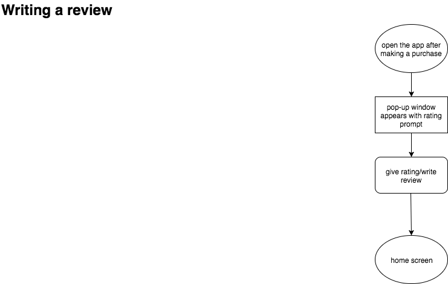
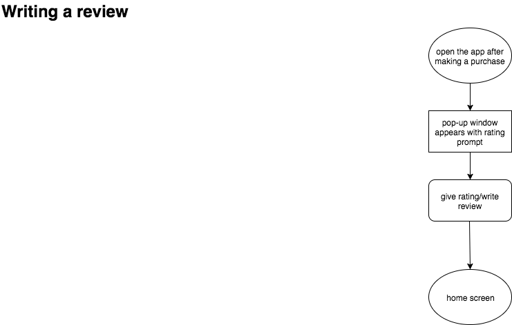

For this project, Bloc.io presented me with a logo and color palette and gave me the challenge of designing a mobile app that allows users to find food trucks near them, view a menu, select items for purchase and checkout.
The Problem
Tools for finding food trucks are extremely limited. You’re almost exclusively limited to going to the food truck website for directions. There’s no way to filter out a map of food trucks based on what you’re feeling like eating and what’s nearby, and there’s no way to pay in advance to avoid long lines. This combination of challenges can make ordering from food trucks a frustrating and lengthy experience.
The Solution
Using a location-based map and intuitive filters, PayCrave makes it easy to find the food you’re craving. It also employs an easy-to-navigate menu/payment system so that you can easily find and pay for food before you arrive.
The Process
Getting to know the Users
Creating a Survey
My first goal was to become familiar with the users and determine their requirements. In order to do this, I created a survey that to help me answer some key questions:
- Is there enough of a demand for this product?
- What are the biggest user frustrations when ordering from a food truck?
- How can the overall food truck ordering experience be improved?
Survey Results
This survey was completed by a total of 20 people across social media and online forums. Respondents primarily were located in large cities.
- 85% of respondents order food from food trucks, and of those, the majority have eaten at a food truck at least 1-2 times in the past month
- 100% of respondents order food in person as opposed to on their phone or laptop
- Nearly half of respondents said the least convenient part of ordering from a food truck is long lines. The next grievances were - can’t find truck i want, can’t order on my phone, trusting vendor
- 80% of respondents said they would order food from trucks more often if they could order on their phones
- When asked how their experience good be improved, the most common responses were: set time for pickup, knowing where trucks are before going outside
Understanding the Survey
Based on these results, there is clearly a need to provide a more convenient food truck experience, at least to people in urban areas. Avoiding long lines and choosing a pick-up time for your food can both be solved by allowing users to view a menu and order in advanced. Furthermore, the frustration of not being able to find the truck you want can be solved by creating a map with a filter feature with the truck names and food types.
User Stories & User Flows
As part of the assignment, Bloc.io provided the key user stories for the assignment. I found these user stories to be supported by the data from my survey as actions that users would want to accomplish while user the app.
The list of user stories is as follows:
As a user, I want to view food trucks near me on a map
As a user, I want to select a truck, view details, and see a menu
As a user, I want to create an account and view recent transactions
As a user, I want to choose items to purchase and pay for them using my phone
As a user, I want to rate and review a food truck, and view other ratings and reviews
Based on these user stories, I created subsequent user flows to visualize how users would accomplish these goals: (insert assets)
 

Designing the Wireframes
Once I created these user flows, I was able to decide what the screens and my navigation should look like. Since one of the first and most important goals of the app is to easily and quickly find food trucks, I made the map displaying food trucks based on user location the first screen that appears when you open the app. I also created a vendor list display option as well so that it makes it easier to see details for multiple trucks at once, and display trucks by category or distance to yourself. It makes it easier to pick and choose when you can see multiple options at once.
One of the elements that I thought carefully about in this app, is the onboarding process. Rather than having the user sign up the first time they open the app, it aims to have as low a barrier to entry as possible. You’re not prompted to sign-up for the app until you try to purchase food, at which point you will need an account in order to use payment information.
Here are my initial sketches of the screens: (insert assets) And the mockups: (insert assets)Results/Prototype
Conclusion
The main purpose of this assignment was to get a feel for basic app anatomy/iOS Interface Guidelines, and to become comfortable designing with sketch and Invision, so there are a few parts of the design process that were left out.
One of the things I did not get a chance to do was user testing. If I were to expand upon this project, I would like to do user tests to see how well users are able to complete the lists of tasks I designed for.